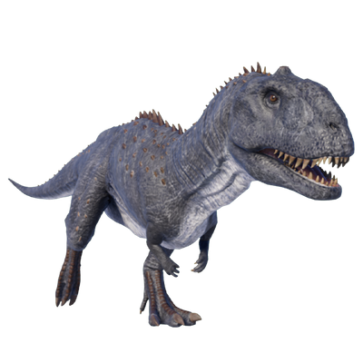

Useful Website
Majungasaurus is a carnivorous theropod from the Late Cretaceous period and grew to around 9m in length. As the apex predator of its era, it used its sharp teeth and powerful bite to tear flesh from its targets and is one of the few dinosaurs known to have eaten members of its own genera - although research has not confirmed whether this cannibalistic behaviour took the form of hunting or scavenging on carcasses.
